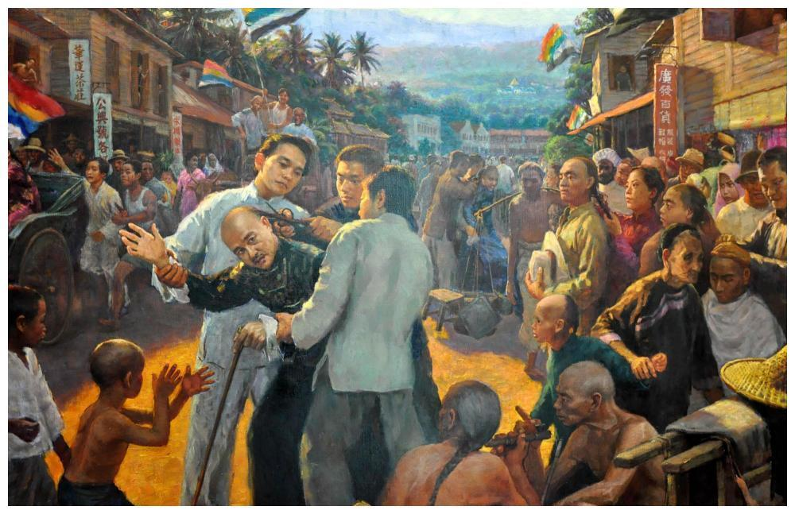
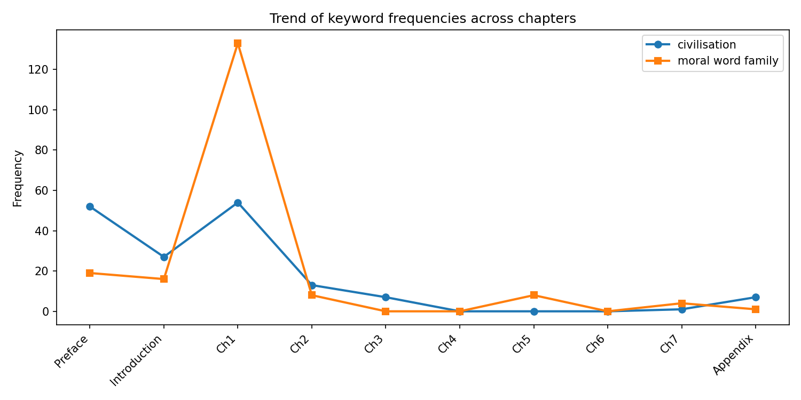
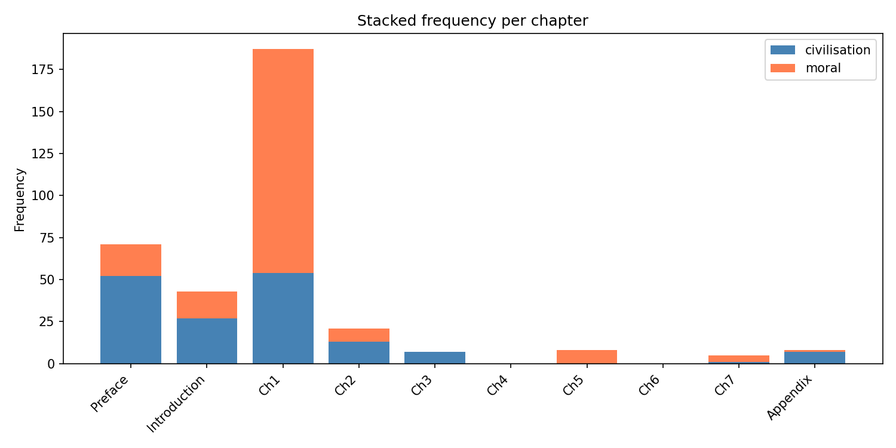
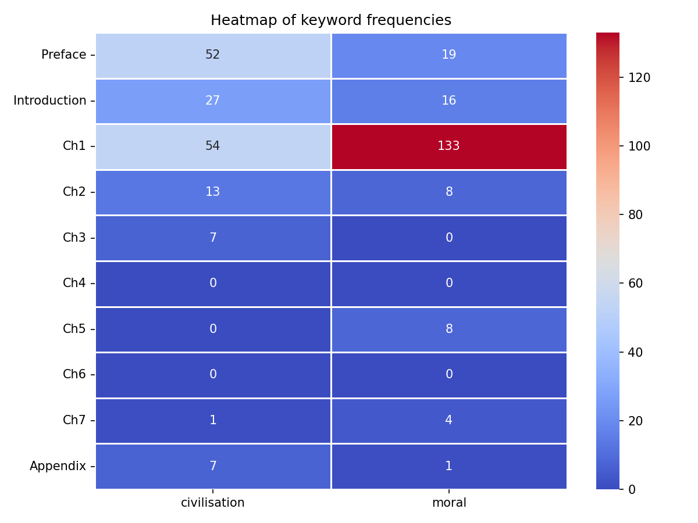

The Spirit of the Chinese People Ku Hung‑ming · Quantitative Discourse Analysis
Python‑based text mining of “civilisation” and moral vocabulary across chapters
161
“civilisation” total
189
moral word family
70.4%
moral terms in Chapter 1
82.6%
civilisation in first 3 sections
Ku Hung‑ming (1857–1928) Guardian of Chinese Civilisation
About The Spirit of the Chinese People
Published in 1915, The Spirit of the Chinese People is Ku Hung‑ming’s most representative work aiming to reinterpret Chinese traditional civilisation to Western readers amid cultural collision and social turbulence. The book systematically defines the connotation of Chinese civilisation, distinguishes moral spirit from material civilisation, and responds directly to Western prejudice against Chinese culture in the early 20th century.
This project adopts quantitative text analysis to count and distribute core vocabulary such as “civilisation” and moral-related words across chapters. By revealing the concentration rules of keyword layout, it verifies Ku’s deliberate writing strategy: establishing theoretical definition in the early chapters, applying arguments in the middle part, and conducting cultural reflection and social criticism in subsequent sections, providing data support for traditional literary qualitative research.
Scholarly Dialogues & Key References
Ku Hung‑ming (1915)
The Spirit of the Chinese People
As the original research text, this work contains a total of 161 occurrences of “civilisation” and 189 moral-related vocabulary items. Quantitative distribution reveals Ku’s deliberate rhetorical strategy of concentrating core theoretical concepts in the early chapters rather than dispersing them evenly across the whole book.
Wu Zhengchun (2021)
“Virtue, Not Queue”
Wu argues for Ku’s moral civilisation framework; our data confirms 82.6% of “civilisation” appears in Preface, Introduction and Chapter 1. This numerical evidence proves Ku establishes his core civilisation definition first, then applies it to subsequent cultural and social critiques.
Wang Yu (2022)
“Gentleness” as core
Wang highlights gentleness as Ku’s central spiritual concept. Quantitative results support this view: 70.4% of all moral terms cluster in Chapter 1, indicating Ku lays down his fundamental moral axiom once and does not repeat theoretical elaboration in later argumentative chapters.

Yu Zuhua & Yang Yuhao (2000)
Two contrasting cultural gazes
Their dual-gaze theory is verified by zero-keyword distribution in Chapters 4 and 6. These purely polemical sections contain no civilisation or moral vocabulary, showing Ku consciously separates theoretical construction from satirical criticism in textual structure.
Cultural Gallery · Visualising Ku's Argument
This gallery systematically presents the author, texts, and historical context of The Spirit of the Chinese People through three sections: portraits, editions, and background. All images support cultural interpretation and historical contextualisation for your research.
Data & Interactive Visualisation
Chapter Frequency Table
Chapter
civilisation
moral*
Preface
52
19
Introduction
27
16
Ch1
54
133
Ch2
13
8
Ch3
7
0
Ch4
0
0
Ch5
0
8
Ch6
0
0
Ch7
1
4
Appendix
7
1
Analysis: This table records the exact frequency of "civilisation" and moral terms across all chapters, revealing the uneven distribution of core vocabulary.
Dynamic Bar Chart
Analysis: Chapter 1 holds 70.4% of all moral terms – theoretical detonation. Civilisation shows three‑peak cumulative framing (Preface, Intro, Ch1).
Supporting Visualisations
📖 Word Cloud
High‑frequency terms: religion, confucius, war, mob, gentleness.
📈 Line Chart

Sharp drop after Chapter 1 for moral terms; three‑step decline for civilisation.
📊 Stacked Bar

Chapter 1’s moral contribution dominates – “theoretical detonation”.
🔥 Heatmap

Colour intensity peaks for civilisation in first three chapters, for moral only in Chapter 1.
Word frequency ignores context – e.g., “moral force” vs. “moral obligation” are counted identically, though their semantic weight differs.
Single book study – generalisation to Ku’s other English writings (e.g., translations of Confucian classics) requires further analysis.
No temporal semantic shift – the method does not capture changes in meaning over time, but the book was written in a short period, so this concern is minor.
Future Research Directions
Collocation analysis – to distinguish different uses of moral (e.g., “moral force” vs “moral obligation”) and reveal semantic patterns.
Word embeddings (Word2Vec) – to map semantic shifts within Ku’s oeuvre and compare with contemporary texts.
Comparative study – with Liang Shuming’s Eastern and Western Cultures and Their Philosophies to test similar rhetorical patterns.
Workflow & Reproducibility
Data source: LaTeX source files of The Spirit of the Chinese People (10 chapters: Preface, Introduction, Ch1–7, Appendix).
Python scripts: Text extraction and cleaning (removing LaTeX commands, comments, environments); tokenisation and per‑chapter word counting using collections.Counter; keyword definitions: civilisation (including civilization), moral* (moral, morality, morally).